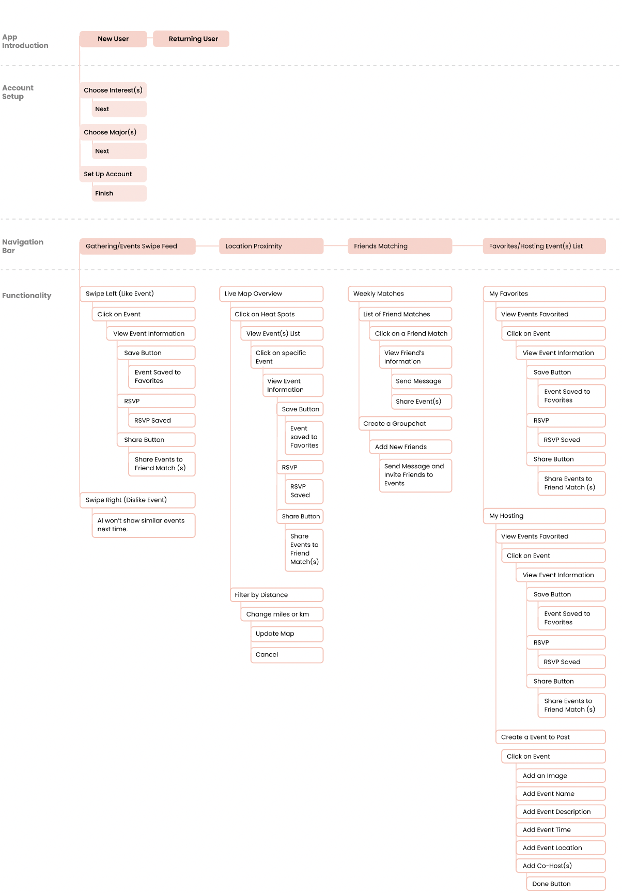

Overview
This app serves as a valuable tool for college students, offering a comprehensive solution to explore a diverse array of events, both on and off campus. Its primary function is to empower users to pinpoint events that align seamlessly with their unique preferences and logistical considerations, such as timing and location. Furthermore, the application aims to foster social connections and enable users to expand their network, ultimately enriching their overall college experience.
Role(s)
User Research
Prototyping
Usability Testing
Interface Design
Time
January 2022 - May 2022
Collaborator(s)
Ben Catania (UX Researcher &Software Engineer)
Evan Wagle (UX Researcher & Software Engineer)
Huong Pham (UX Researcher)
College students are constantly seeking out opportunities to participate in community events, to make new connections, and to shape their identity. Despite efforts to solve this problem (CampusGroups, flyers, etc), we continually see the same questions resurfacing:

With this research, our major objective is to completely revamp and reimagine a solution that would help students stay up to date and learn about events on/off campus that fit their work schedules, but also consider the less obvious factors of logistical concerns and friends.
Through a qualitative study, we conducted a co-design session involving hands-on activities, auto-ethnography, and diary studies. Our team designed an application that accommodates the needs/challenges of users when it comes to finding events, taking into account insights from these research methods.
I was responsible for preparing for the co-design session, analyzing data from user research methods, and UX/UI design for the application which increase internal workflow efficiency and facilitate more effective event searching among students based on personal interests.
Our process on the Evently App is based on on a crafted UX Process timeline that is similar to the Lean UX Process. We aim to incorporate the key phases of Research, Empathize, Ideate, Test, and Develop.
Breaking it down, we are focusing on designing a user friendly interface to improve event searching personalized to interests and location conveniently and easily while establishing new connections.
One of the significant challenges when it comes to connecting people with events is rooted in the human desire for convenience. Often, individuals don't plan their outings well in advance and might not be inclined to go out of their way to meet new people. Consequently, they tend to choose events that are close and easily accessible to them.
Moreover, the concept of homophily, which refers to our tendency to associate with those who are similar to us, heavily influences the social relationships we form. This has a profound impact on our interactions and the events we attend.
Intriguingly, in 2013, researchers made noteworthy strides by harnessing wireless technology for location tracking. Their findings revealed that factors such as the physical proximity of users, similarities in their movement patterns, and shared interests could be leveraged to facilitate friendship matching. This technology has the potential to enhance social connections in various settings, including workplaces, conferences, and other places where people interact.
Here are key challenges and goals discovered through the analysis of literature and related research & development. Our team has uncovered unique perspectives on possible ways of addressing this "wicked problem".
Understanding the Existing Solution Space
Analyzing the Existing Product(s)
Brainstorming Possible Solutions
For our brainstorming session, we followed a brainstorming technique called Crazy 8's to help us dive into the problem gaps that exist in current products and design something that can efficiently fit in our user needs.
Our primary user group was college students who were looking to socialize and were recruited from student gatherings such as student-run organizations, off-campus gatherings, bars, and any other on-campus/off-campus event. We created two personas to helped us visualize the user and their interactions with our design.
We conducted contextual interviews with six users. Our aim was to gain deeper insights into the challenges they encounter and to ascertain their specific needs. We systematically transformed these user insights into an affinity diagram, carefully categorizing and clustering their concerns into distinct themes. This process involved dividing them into groups and levels to highlight their significance within our problem space.
This Priority Level Diagramming helped us identify the concerns that our users have in common by dividing it into low/high level effort significance to the user. This allowed us as a team better understand what users need and design a system that work for them efficiently.
Based on the user interviews conducted with 6 user, we found the following key insights:
- Location is a factor when it comes to getting appropriate transportation to events.
- Many students rely on Listserve and Instagram stories to learn about events but don’t find it as effective.
- Students find it challenging to find events based on personalized interests.
- Most students enjoy finding new connections and strive to find balance in life and work.
Method 01: Co-Design Session
A co-design session refers to a collaborative design approach where a diverse group of stakeholders, including users, designers, product managers, and relevant team members, come together to tackle the design of a product, service, or user interface. The primary objective of a co-design session is to harness the collective wisdom, creativity, and insights of all participants in order to develop a user-centric solution.
These sessions are typically organized around specific design challenges or issues, enabling participants to brainstorm solutions and make design choices collaboratively. It can take various formats, such as workshops, focus groups, design sprints, or other structured interactions, all aimed at ensuring that the resulting design aligns closely with the needs and preferences of the end-users. Involving users directly in the design process is fundamental to co-design, as it enhances the likelihood that the final product will meet user expectations effectively.
Co-design emerges as the most suitable approach for our project due to the inherently dynamic nature of social events, which can often be impromptu and subject to spontaneous decision-making. Our co-design session commenced with an icebreaker activity, strategically designed to enhance communication and bolster team cohesion. Following this, participants were divided into pairs to delve into the intricacies of the problem space, fostering collaborative brainstorming.
Pairs sketched innovative design concepts and created prototypes for constructive feedback. Participants then mapped user interactions via storyboarding, aided by two researchers. One recorded notes, while the other guided teams.
We used insights from past interviews for affinity diagramming, identifying key themes to inform sketching and prototyping. Data and field notes from the session revealed recurring themes, providing a foundation for product improvements.
Intimacy and commonality between people are important parts of social event planning. One of our participants discussed the Cornell summer social scene, in which parties were generally larger despite the smaller Cornell student population present on campus, due to the fact that summer students felt they had more in common and had a closer-knit community than during the academic year.
Our participants desire to expand their network in a natural way,” meaning that they hope to be able to find events that relate to their interests, as they can find other people with similar interests at these events. People felt intimidated to attend events unless they knew people at the events, or knew that the audience was amicable and shared similar interests to them.
Our participants discussed the importance of convenience in finding social events, which was demonstrated in particular as one of our participants developed a prototype monorail to travel around campus near instantaneously. From this we recognized the importance of enabling students, who generally lack fast transportation, to find events close and convenient to them.
Method 02: Auto-Ethnography Combined with Diary Studies
In our design context, the participants consist of the four team members, and each member will conduct an auto-ethnographic study focused on an established product within the community platform space. These selected products include Campus Groups, Facebook & Instagram, Cornell Events, and Listserv Gmail. We chose these platforms based on insights gathered from interviews and their widespread use among students. Researchers will utilize these platforms to gain deeper insights into the user's perspective and their overall experiences, thereby contributing to a comprehensive understanding of both the positive and negative aspects of the existing designs.
Within the framework of our study, researchers will complete a combined feedback and elicitation diary to capture their thoughts and experiences related to each community platform. This fusion of research methods is instrumental in achieving the project's objectives by enabling us to empathize with the users' socialization processes and uncover the strengths and weaknesses inherent in the current product designs.
It was shown that word of mouth and text was the most frequent method used for finding social events, with usage at 38.5% of the time.
We asked our participants to determine the utility of the technology used in searching for events from 1 to 5, with 5 being the most useful and 1 being the least useful. In analyzing this data, we calculated the average score of each tool and found that email listservs, word of mouth, and text were the most effective.
However, this may be because these tools require a user to “opt-in” (subscribe or join a friend network), whereas CampusGroups and Cornell events are not personalized to the individual and offer a generalized experience, while social media tools offer a mix of opt-in (following users) and exploratory (recommended) content. Overall, the more personalized the tool was, the higher the average score.
In finding events of interest, we found that word of mouth, Facebook/Instagram, and Listservs similarly enabled users to find events of interest with a low unsuccessful rate, whereas CampusGroups and Cornell Events generally underperformed in helping users find successful events.
Throughout this research methods, we discovered some advantages that these products hold:
- Event description and times were most useful in helping find an event to attend.
- One helpful feature that a participant mentioned was that “the app could ask me what I’m looking for/what events, rather than me needing to do the heavy lifting of searching clubs to find events that interest me.”
- Other useful features were knowing if friends were going to the same event and being able to coordinate with friends as well.
However, we found common key issues in the existing products that needs to be addressed:
- Participants often could not find events which they were interested in.
- Participants could not find specific information (ex: Zoom link).
- Tags cluttered the user interface.
- There was no “form of visual” which made it hard to skim through information quickly.
- People could not filter by events that they were interested in and had to manually sort through information.
Drawing inspiration from user feedback, we established fundamental design objectives. The overarching aim entails crafting an immersive, streamlined, and user-friendly process for finding events conveniently while establishing new connections.
- Find Events/Gatherings Based on Location Proximity.
When users are near a building (circular radius), events that are happening will notify users what is happening near them. Users can change the distance in miles/km and turn notifications on/off. - Events/Gatherings Swipe Deck.
Inspired by Tinder Swipe , users will have a opportunity to swipe right to get more information on events/gatherings and swipe left to dismiss events/gatherings. These swipe decks are personalized to specific users based on their personality traits and interests from their account setup. - Find New Friends with Similar Interests.
Users will be matched to people who have similar interests and hobbies. There is a option to create group chats to talk about events and schedule times to go together. - View Events that are Favorited and Post Events to Recruit People.
Users can view all events/gatherings that they were interested in going in one page and also have the opportunity to post their own events to the community to spread the word.
Information Architecture
Drawing from the insights through affinity diagramming and a comprehensive evaluation of the current product, our collaborative team effort culminated in the delineation of the main features users found valuable. The four main features includes finding events/gatherings based on personalized interests, location proximity, and finding friends with similar interests to go to events together.
User Flows
In order to refine the delineation of user interactions, we crafted distinct user flows for various features, thereby enhancing our understanding of users' anticipated utilization patterns.
Wireframing The Solution
During this phase, we used wireframes to engage in conversations with our stakeholders, gaining deeper insights into their user requirements. The majority of our pages were designed in alignment with the established information architecture and user flow.
I mocked up low fidelity wireframes to gather feedback from stakeholders encompassing Product, Engineering, and users on the holistic arrangement and layout of the app. This includes developing a uniform visual hierarchy and layout paradigm.
Drawing insights from the input provided by the user group on the low-mid fidelity wireframes, we used valuable feedback that served as a foundation for refining our design approach. As a result of this iterative process, several noteworthy enhancements were made to the design, which are highlighted below:
After going over all the issues with my clients, I started mocking up design solutions for each Reports page. Below is a comparison between the original product detailed page and the redesigned one.
1. Account Setup
We've designed a streamlined three-step process within the application, enabling users to effortlessly establish their profiles and input their interests or majors. This customization empowers our system to tailor event feeds uniquely for each individual, ensuring a personalized and engaging experience.
For returning users, our application offers the flexibility to either update their interests or navigate directly to the home page, where they'll discover personalized events tailored to their preferences.
2. Gathering/Events Feeds
Taking inspiration from Tinder's swipe functionality, we've crafted the feed page within the application. This feature empowers users to effortlessly swipe through a curated selection of interesting events and gatherings, enabling them to mark their favorites for potential attendance later.
For those seeking more details, users have the option to click on each event individually to access more information such as time, date, location, etc. Moreover, sharing events to invite others has been made seamless, and users can conveniently RSVP to enhance their event-finding experience.
3. Find Gathering/Events via Location Proximity
Within our application, we've integrated a dynamic feature: a map displaying the user's present location, overlaid with nearby events represented in the form of a heat map. In this intuitive visualization, areas with a higher concentration of events or people appear as darker, more prominent spots on the map.
What sets this functionality apart is the flexibility it offers. The map includes an option to set specific distance filters, enhancing the user's ability to fine-tune their event discovery experience.
This feature directly addresses the user's need for convenience and spontaneity when seeking out nearby events. It ensures that users can effortlessly identify and engage with events in their vicinity, enriching their overall app experience.
4. Establishing New Connections through Friend Matches
Within the application's chat page, there is a banner displaying the user's weekly matches, carefully curated based on shared interests and hobbies. The weekly matches feature serves a dual purpose: it facilitates the opportunity for users to connect with new people on a weekly basis, thereby expanding their social networks.
Furthermore, users are empowered with the ability to initiate swift one-on-one conversations with their matches and even establish group chats for collaborative interactions. Additionally, they can easily invite others to events or share event details among themselves. These functionalities effectively address one of the key objectives identified through user research.
5. My Events/Hostings
This page serves as a comprehensive hub, displaying all the events and gatherings that have been favorited by the user, along with events they are considering attending.
Additionally, it conveniently houses a list of events hosted by the user within the application. These features are thoughtfully designed to fulfill the user's crucial need for efficient event management and organization, a requirement identified as significant during both our co-design and auto-ethnography sessions.
After making final changes to our design based on user feedback, we composed a video that demonstrates how our design works and its primary features within a scenario that situates a certain context of use.
This is a screenshot of our script for our video scenario before shooting the video. Our objective is to guarantee that every element incorporated within the script effectively contextualizes the application's usage for our users.
Evently Interaction Video
Since the implementation of the finalized prototype of Evently, we conducted more usability sessions to better understand whether this is a system that outshines many of the existing products while satisfying the users' needs and goals. As a result, we received many positive feedback from users and all the stakeholders involved.
Some key takeaways from this project are:
- In the HCI world, the most outstanding features emerge through collaborative efforts.
Looking at the diverse perspectives that each participant contributed during our co-design session was truly inspiring. It was particularly intriguing to observe that those without technical backgrounds often bring forth boundless ideas, unencumbered by technical constraints. Conversely, our technically adept colleagues provided valuable grounding, serving as a pragmatic sounding board for assessing the feasibility of concepts. - Effective products lies in adopting design thinking principles.
Throughout our semester-long project, this framework played a impactful role in shaping our designing sessions and discussions with the team. It served as a guiding force, ensuring that we remained laser-focused and aligned with our objectives. - Usability Testing doesn't end after development.
Design embodies an ongoing cycle of refining the user experience, a perpetual endeavor aimed at enhancement. Always find ways to father and listen to user's feedback on the product whether it's in the process of being created or already created. There are always opportunities to make the user experience better.